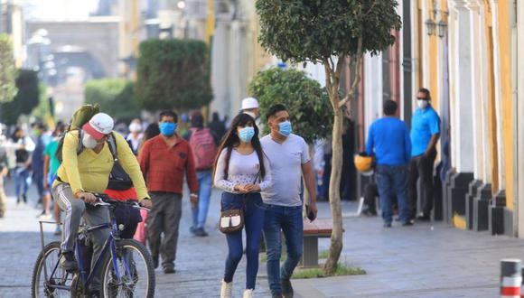

Arequipa | Noticias
Arequipa: municipio provincial pide que se declare inamovilidad total el sábado 29 y el domingo 30 por el debate presidencial

El burgomaestre Omar Candia sostuvo que es necesario que se descentralicen los debates, pero bajo ciertas restricciones. Asimismo, pidió al Gobierno fortalecer el proceso de vacunación en la región con el envío de más dosis. Indicó también que establecimientos de salud de Arequipa no se dan abasto debido al aumento de contagios de coronavirus.
Según la Sala Situacional del Ministerio de Salud (Minsa), actualizada al 20 de mayo, Arequipa es la región con más contagios de COVID-19 (con 79.339 casos), después de Lima y el Callao. Asimismo, las muertes han llegado a 2.756. Debido al incremento de casos, la Municipalidad Provincial solicitó se declare una inmovilidad total desde el mediodía del sábado 29 hasta la noche del domingo 30 de mayo, debido al debate presidencial que se llevará a cabo en la Ciudad Blanca.
“Creo que es necesario que estos debates se realicen en provincias, donde los candidatos que han pasado a segunda vuelta puedan poner en su agenda la descentralización. Sin embargo, creemos que el sábado y domingo debe procederse a declarar una inamovilidad absoluta en nuestra ciudad, a fin de evitar las aglomeraciones y un aumento de los contagios”, dijo a El Comercio el burgomaestre de Arequipa, Omar Candia.
Respecto al balance de la pandemia en Arequipa, el alcalde señaló que se encuentran en el pico más alto de la segunda ola. Precisó que el día de ayer sobrepasaron los 911 infectados y se registraron 42 muertos.
“Es la data más alta de la segunda ola, no hemos tenido antes un número así de muertos. La semana pasada en promedio llegábamos a 22 o 23 personas muertas, ahora nos hemos disparado y obviamente hay que tomar medidas de restricción. Por eso hemos pedido que el 29, desde el mediodía y el 30 se declare inamovilidad absoluta en Arequipa para evitar que haya aglomeraciones y se incremente el nivel de contagio”, reiteró.
En cuanto a la capacidad de atención en los hospitales, Candia explicó a este Diario que no se dan abasto. Además, indicó que no cuentan con camas uci suficientes, por lo que pidió al Gobierno central dirigir su atención en Arequipa, ya que carecen en estos momentos de capacidad de respuesta.
“De acuerdo al mapa de calor somo una de las pocas ciudades que estamos en riesgo extremo, por eso se debe visibilizar el problema que vive Arequipa. No tenemos capacidad hospitalaria, tenemos un problema con las camas uci, todos los días hay familias que piden camas uci y no tenemos esa capacidad de respuesta. Creo que el presidente y el ministro de Salud deben proceder a atender las demandas internas de Arequipa”, expresó el alcalde.
Sobre el proceso de vacunación, manifestó que se debe fortalecer un sistema de inmunización que garantice la llegada de más dosis a la región, pues calificó de “insuficiente” el número que hasta ahora han sido enviadas.
“Nos preocupa que estemos recibiendo en promedio a la semana 11 mil, 13 mil vacunas, eso es insuficiente para una población de millón y medio de habitantes. Probablemente estamos hablando un millón 200 mil personas que tengan que vacunarse, pero a este ritmo no vamos a lograr culminar con las expectativas que tenía el propio Gobierno. Estamos recién inoculando la primera dosis a mayores de 60 años y tenemos en la estrategia de vacunación grupos específicos que están en primera línea que todavía no se han vacunado. Pido al presidente pueda dotar de mayor cantidad de dosis”, sostuvo.
Finalmente, Candia exhortó a la población a retomar las medidas de protección, respetar el distanciamiento, usar doble mascarilla y el protector facial y lavarse constantemente las manos para mitigar el impacto del COVID-19. “La población le ha perdido miedo al virus, se está confiando, eso ha generado que se baje la guardia. Nuestra preocupación es que estamos en esta segunda ola y no la podamos parar, está creciendo. En Arequipa se vienen los meses de pleno invierno, done las temperaturas descienden aún más, lo que es un ambiente propicio para el contagio. Todo hace parecer que estamos volviendo al escenario de la primera ola”, explicó el alcalde de Arequipa.
Hernán Medrano Marin
Redactor de Nacional
hernan.medrano@comercio.com.pe
Lima, 21 de mayo de 2021